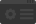

Bonjour à tous, et bienvenue sur mon ePortFolio. Vous pourrez trouver sur cette page diverses informations sur mes projets et ma personne. Bonne visite!
Quentin Arzalier
Étudiant en IUT Informatique à Montpellier
quentin.arzalier@free.fr
07 83 19 72 19

Quentin Arzalier
Étudiant en IUT Informatique à Montpellier
quentin.arzalier@free.fr
07 83 19 72 19
